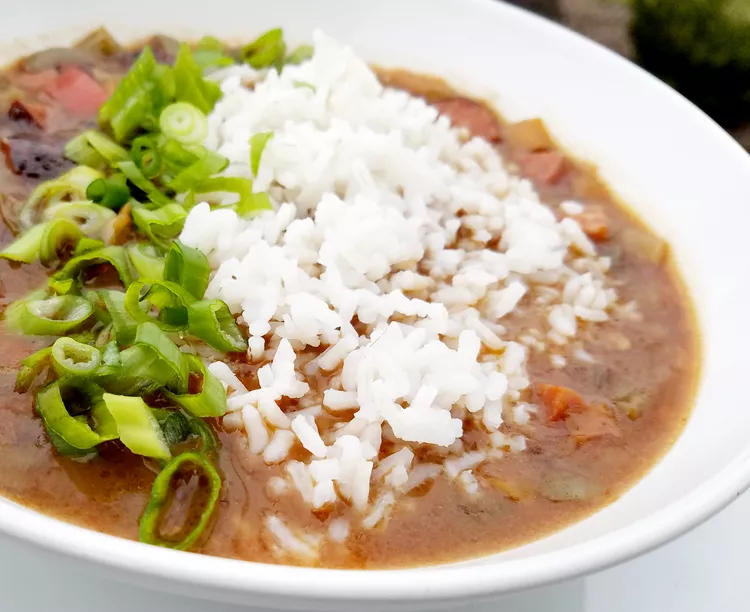

← Go back to home
Chicken and Andouille Sausage Gumbo
This chicken and andouille sausage gumbo is a great recipe for those who prefer gumbo without seafood.

Prep Time: 20 mins | Cook Time: 2 hrs 45 mins | Total Time: 3 hrs 5 mins | Servings: 8
Ingredients
- 1 ½ pounds andouille sausage, sliced
- 4 (5 ounce) boneless, skinless chicken breasts
- ½ cup canola oil
- ¾ cup all-purpose flour
- 4 stalks celery, sliced
- 1 large onion, chopped
- 1 medium green bell pepper, chopped
- 6 cloves garlic, minced
- 2 quarts hot chicken broth
- 1 tablespoon Worcestershire sauce
- 2 teaspoons Creole seasoning
- 1 teaspoon dried thyme
- 1 teaspoon red pepper flakes
- 2 bay leaves
- 6 stalks green onions, sliced
- 1 teaspoon gumbo filé powder
- 2 cups hot cooked rice
Directions
- Step 1
Cook sausage in a Dutch oven over medium heat, stirring constantly until browned, about 5 minutes. Transfer sausage to a bowl.
- Step 2
Cook chicken in the reserved drippings over medium heat until browned on both sides, about 2-3 minutes per side. Remove and set aside.
- Step 3
Heat oil in the Dutch oven over medium heat. Add flour and stir constantly until roux is thick and chocolate-colored (20-30 minutes).
- Step 4
Add celery, onion, and bell pepper; cook for 6 minutes. Add garlic and cook for another 2 minutes.
- Step 5
Stir in hot broth; bring to a boil.
- Step 6
Add chicken, Worcestershire sauce, Creole seasoning, thyme, red pepper flakes, and bay leaves. Reduce heat and simmer for 1 hour.
- Step 7
Remove chicken, shred it, and set aside.
- Step 8
Add sausage to gumbo; simmer for 30 minutes.
- Step 9
Return shredded chicken and green onions to gumbo; simmer for another 30 minutes.
- Step 10
Remove from heat, discard bay leaves, and stir in filé powder.
- Step 11
Serve over hot rice.